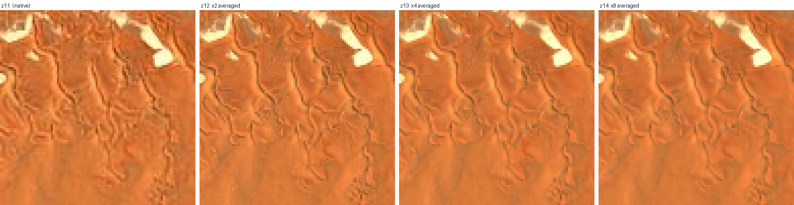
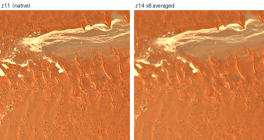
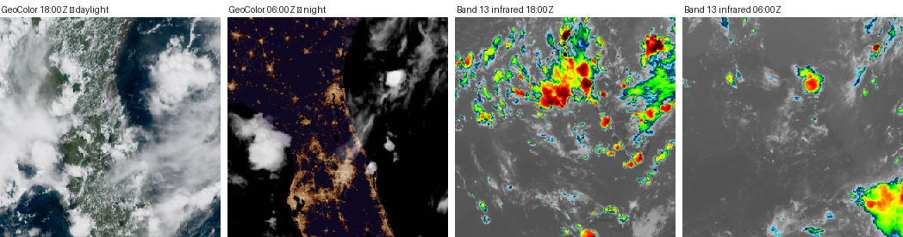

The tile the server hands you at a coarse zoom is not blurry. It is falsely sharp — carrying up to half again as much fine detail as the ground actually has, because the render aliased and the codec rang.
The suspicion was that stitching a big block together and shrinking it would squeeze the blur out. The measurement says something more useful than that. There was never much blur to remove; what averaging removes is invented detail. And a GAN trained on invented detail learns to invent it back.
Namib dunes. Every panel below is the same 256 px output covering the same patch of desert. The only difference is how deep the fetch went before averaging back down: one tile, four tiles, sixteen, sixty-four. Crops are magnified 4× with no smoothing, so you are looking at real pixels.


Two blind "sharpness" numbers cannot settle this, so the deepest fetch — 64 tiles area-averaged down — is treated as the reference, and every shallower variant is scored against it. MTF is the share of the true signal a variant retains in that frequency band. Above 1.0 means the variant has more energy there than the ground does.
| Sentinel-2, Namib z11 → 256 px | tiles | fetched | MTF mid | MTF top | PSNR vs truth | JPEG q85 | ring |
|---|---|---|---|---|---|---|---|
| native z11 | 1 | 256 px | 1.255 | 1.480 | 30.51 dB | 17.7 KB | 1.161 |
| ×2 from z12 | 4 | 512 px | 1.072 | 1.248 | 35.21 dB | 17.8 KB | 1.048 |
| ×4 from z13 | 16 | 1024 px | 1.013 | 1.055 | 41.08 dB | 16.4 KB | 1.050 |
| ×8 from z14 — the reference | 64 | 2048 px | 1.000 | 1.000 | — | 16.0 KB | 1.031 |
Read it in two directions. Down the MTF columns: the native tile carries 48% more top-octave energy than the dunes actually contain, and each round of averaging walks that back toward 1.000. Down the PSNR column: 30.5 → 35.2 → 41.1 dB, converging on the truth rather than drifting from it. Those are the same fact stated twice.
The last two columns answer the other half of the question — whether it survives compression better. At matched JPEG quality the averaged tile is 10% smaller, and the ring column is how much top-octave energy the codec added: 1.161 for the native tile against 1.031 for the averaged one. JPEG spends its bits fighting noise, and then leaves its own ringing behind. Less noise in, less ringing out, smaller file.
The instinctive test is to measure high-frequency energy and call the higher number sharper. Every run prints these four controls precisely because that test fails here.
| Control | top-octave energy | what it proves |
|---|---|---|
| gaussian blur, r = 1.2 | 0.00006 | the metric does fall on real blur |
| halved, then enlarged back | 0.00086 | and collapses on a fake upsample |
| the ×8 reference itself | 0.00721 | this is what the ground measures |
| the native tile | 0.01606 | 2.2× the truth |
| unsharp mask over the native tile | 0.07637 | 10× the truth, with zero new information |
That last row is the whole reason this page exists. A filter that adds nothing at all scores ten times higher than the real thing. Any comparison run on the blind metric alone would have concluded that the native tile — and, even more confidently, a sharpened native tile — was the best data available. Measuring against a reference is what turns an opinion about sharpness into an answerable question.
Supersampling by N costs N² requests per tile. The gain is not uniform across sources, because it depends entirely on how honestly each server renders its own coarse zooms.
| Source | baseline | native MTF top | excess | verdict |
|---|---|---|---|---|
| Sentinel-2 cloudless (EOX) | z11 | 1.480 | +48% | Yes — use ×4 |
| GOES-East GeoColor | z6 | 1.097 | +10% | marginal — only when re-fetching |
| MODIS Terra true colour | z6 | 1.066 | +7% | marginal — only when re-fetching |
fetch_tiles.py --supersample 2|4 fetches the children a zoom deeper and area-averages to 256 px. Box filter, not Lanczos — Lanczos would put ringing back into the exact frequencies being measured.
This measures the input. Whether cleaner input yields a better network is a separate question with a separate instrument: retrain on a supersampled set and compare FID. Nothing here licenses the claim that it will.
Clouds are perfectly visible at night. The timelapses stop at dusk for a different reason.

So the day-only filter is not a limitation of the sensor, it is a decision about the training distribution: splicing the two together would teach a generator two unrelated worlds and a hard cut between them. There are two honest ways round it.
Train on daylight only, as now. Prettiest imagery, ten-minute cadence, but every sequence ends at dusk and the model never sees a full diurnal cycle through to the other side.
Band13_Clean_Infrared — the two right-hand panels — looks the same at noon and at 2 am, because it measures cloud-top temperature rather than reflected sunlight. One distribution, unbroken round the clock. The price is 2 km resolution instead of 1 km (GIBS serves it one zoom level shallower) and false colour instead of true.
Measured by asking, not by reading the documentation: the same Gulf tile at 15:00Z, at increasing ages.
GIBS keeps a rolling window of roughly a month of GOES imagery and then drops it. Everything on the timelapse page was pulled inside that window, and the oldest of it will stop existing at source in a few weeks.
For longer runs the imagery tiles are the wrong door. NOAA publishes the underlying ABI radiances on AWS Open Data, free and unauthenticated: s3://noaa-goes16/ABI-L2-MCMIPF/ holds full-disk multiband scenes from 2017 to now, and noaa-goes18 from 2022. That is a nine-year archive at the same ten-minute cadence — but it is netCDF radiance granules, not pictures, so it needs the projection and the colour recipe applied on our side. A day of GOES-16 full disk is a few hundred gigabytes, so any use of it starts by choosing a small window and a few bands.